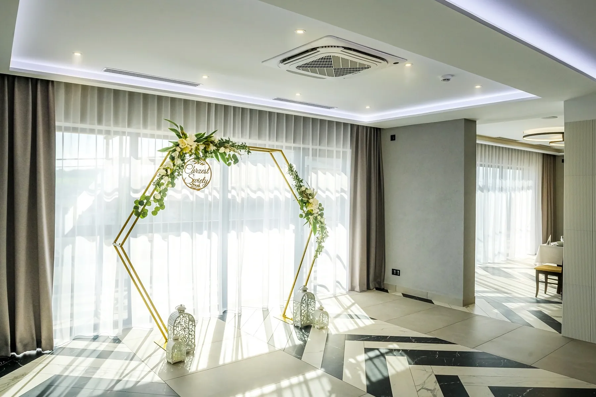
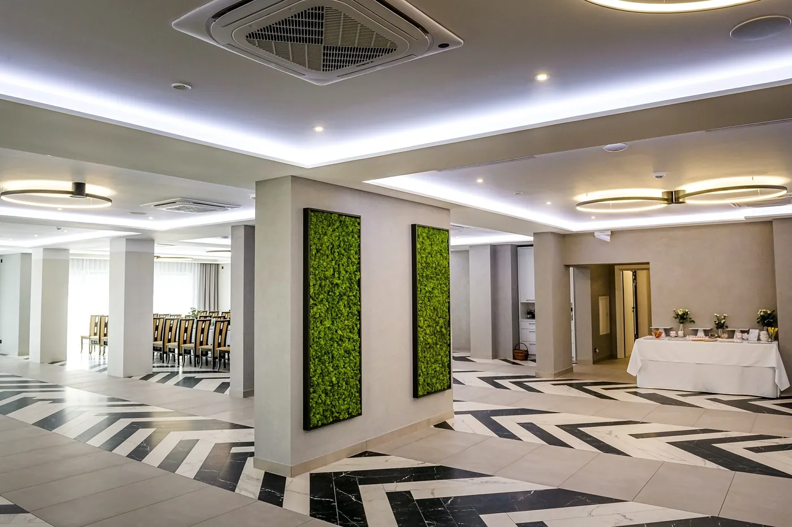
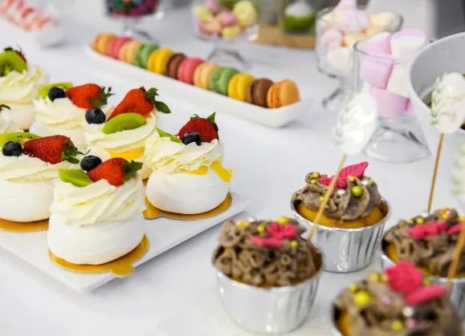
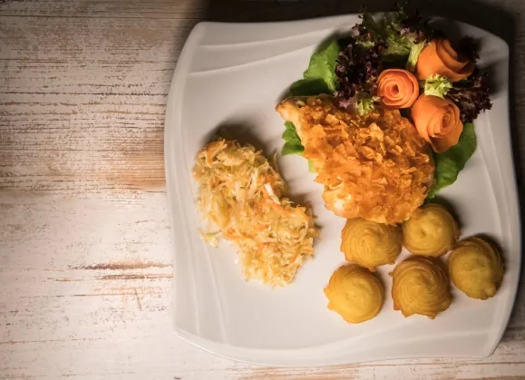
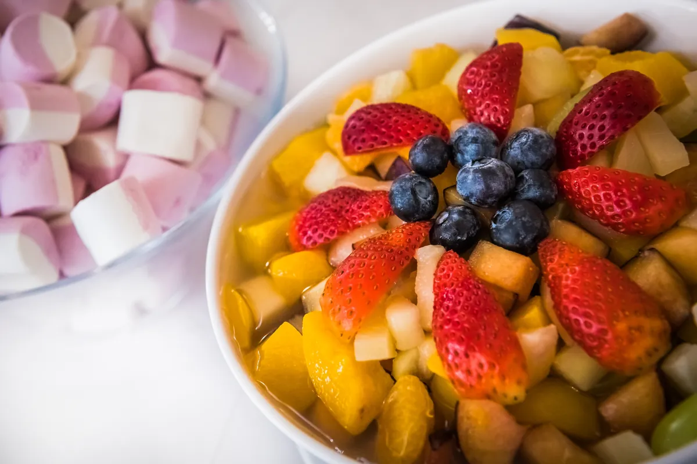
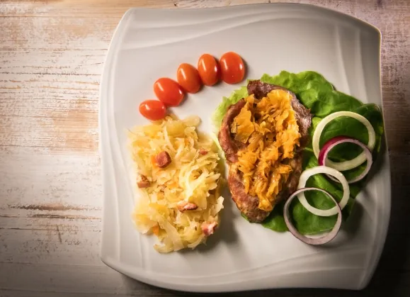
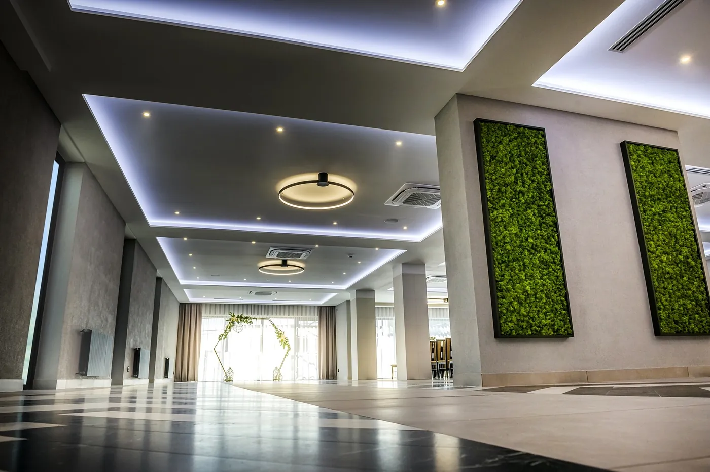
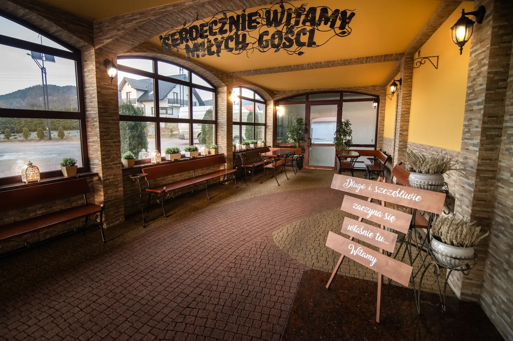
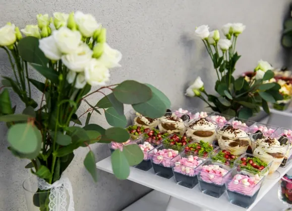

Dom Weselny „Walek”, Mordarka
Wasze wesele,
Wasz dzień
Jasna, klimatyzowana sala na 270 gości, kuchnia na produktach z własnego gospodarstwa i 60 miejsc noclegowych. Pięć minut od Limanowej.
270gości na sali bankietowej
60miejsc noclegowych
60osób w drugiej, kameralnej sali
2005od tego roku organizujemy przyjęcia
Każde przyjęcie traktujemy indywidualnie
Od 2005 roku organizujemy wesela i przyjęcia okolicznościowe. Do każdej pary podchodzimy osobno, także z nietypowymi pomysłami, i doradzamy na każdym etapie przygotowań.
- tablica z listą gości i numerowane stoliki
- kącik zabaw dla dzieci
- obiekt przystosowany dla osób z niepełnosprawnościami
- duży, oświetlony parking tuż przy budynku


Kuchnia z własnego gospodarstwa
Menu ustalamy z każdą parą osobno. Ryby, wołowinę i drób hodujemy we własnym gospodarstwie, więc wiemy, co trafia na talerze gości.
Kuchnia i catering


Zajrzyj do środka
Cała galeria

